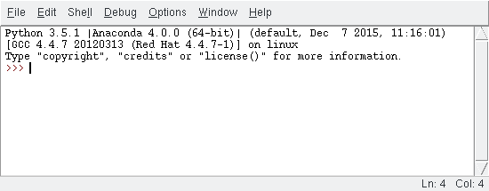

Κεφάλαιο 2: Γλώσσες προγραμματισμού#
Όπως με τους ανθρώπους, έτσι και με τους υπολογιστές χρησιμοποιούμε διάφορες γλώσσες για να επικοινωνήσουμε. Οι γλώσσες αυτές είναι γνωστές ως γλώσσες προγραμματισμού. Μια γλώσσα προγραμματισμού είναι ουσιαστικά ένας τρόπος να επικοινωνήσουμε με έναν υπολογιστή και να του δώσουμε τις κατάλληλες οδηγίες.
Ένα πρόγραμμα στον υπολογιστή γράφεται με συγκεκριμένο τρόπο. Είναι συγκεκριμένες οι εντολές που καταλαβαίνει ο υπολογιστής και κάθε φορά υπάρχουν αυστηροί κανόνες δομής και σύνταξης ενός προγράμματος. Το σύνολο των κανόνων δομής και σύνταξης ενός προγράμματος, συνθέτουν την γλώσσα προγραμματισμού.
Υπάρχουν πολλές γλώσσες προγραμματισμού και η καθεμία έχει τα προτερήματα και τα ελαττώματά της. Ανάλογα με τις ανάγκες μας και την φύση του προγράμματος που σκοπεύουμε να υλοποιήσουμε, επιλέγουμε και την αντίστοιχη γλώσσα. Για παράδειγμα αν θέλουμε να υλοποιήσουμε μια διαδικτυακή εφαρμογή (Web Application) θα επιλέξουμε διαφορετική γλώσσα απ' ό,τι θα επιλέγαμε αν θέλαμε να κάνουμε μια εφαρμογή για κινητά (Mobile Application).
Οι γλώσσες προγραμματισμού χωρίζονται σε δυο μεγάλες κατηγορίες:
- Διερμηνευμένη γλώσσα (interpreted language):
Στις γλώσσες αυτές, υπάρχει ένας διερμηνέας που εκτελείται και μεταφράζει σε πραγματικό χρόνο τις εντολές που γράφουμε σε γλώσσα μηχανής. Τέτοιες γλώσσες είναι: Python, PHP, JavaScript, ... - Μεταγλωττισμένη γλώσσα (compiled language):
Στις γλώσσες αυτές, πρώτα γράφουμε το πρόγραμμά μας και μετά με την χρήση μεταγλωττιστή (compiler) την μεταφράζουμε σε γλώσσα μηχανής. Τέτοιες γλώσσες είναι: C/C++, Java, GO, BASIC, ...
Γλώσσα μηχανής είναι το σύνολο τον εντολών / οδηγιών σε μορφή ακολουθίας από bit (0 ή 1) που λαμβάνει απευθείας ο κεντρικός επεξεργαστής (CPU) του υπολογιστή, ώστε να εκτελέσει τις εντολές μας. Στην πραγματικότητα η κεντρική μονάδα επεξεργασίας μόνο αυτή τη γλώσσα καταλαβαίνει. Αλλά επειδή είναι δύσκολο και χρονοβόρο να γραφτεί ένα πρόγραμμα μόνο με τη χρήση 0 και 1, έχουν αναπτυχθεί οι γλώσσες προγραμματισμού οι οποίες είναι πιο κατανοητές στον άνθρωπο και στη συνέχεια θα μεταφραστούν σε γλώσσα μηχανής για να γίνουν κατανοητές και από τον υπολογιστή.
2.1 Python#
Η γλώσσα που θα επιλέξουμε στα πλαίσια αυτών των σημειώσεων, είναι η Python. Ο λόγος που προτιμάμε την Python είναι επειδή είναι πολύ εύκολη στην εκμάθηση και δεν είναι ιδιαίτερα αυστηρή στους συντακτικούς κανόνες. Ο σκοπός μας είναι η κατανόηση του προγραμματισμού σαν διαδικασία και όχι η εκμάθηση των μυστικών μιας γλώσσας. Σε πιο προχωρημένο επίπεδο θα αναφερθούμε και σε άλλες γλώσσες και τα προτερήματά τους, πιο αναλυτικά.
Όπως αναφέρθηκε παραπάνω η Python είναι μια διερμηνευμένη γλώσσα (Interpreted Language), συνεπώς δεν θα μας απασχολήσουν διάφορα στάδια μεταγλώττισης του κώδικα. Το πρόγραμμα που θα γράφουμε, θα μπορεί να εκτελείται άμεσα.
2.2 Εγκατάσταση της Python#
Για να εγκαταστήσετε την Python στα windows, επισκεφτείτε την σελίδα www.python.org και κατεβάστε την έκδοση 3.x.x (αρκεί να είναι μεγαλύτερη από 3.5.0).
Αφού την κατεβάσετε, εκτελέστε το αρχείο και ακολουθήστε της οδηγίες μέχρι να ολοκληρωθεί η εγκατάσταση. Για να βεβαιωθείτε ότι όλα πήγαν καλά, ελέγξτε αν υπάρχει το μενού Έναρξη > Όλες οι εφαρμογές > Python 3.x (Start Menu > Applications > Python 3.x) και επιλέξτε το IDLE.
Το παράθυρο που θα ανοίξει θα πρέπει να μοιάζει με αυτό της εικόνας 2.1:

Το πακέτο που μόλις εγκαταστήσατε έχει όλα όσα χρειαζόμαστε για να ξεκινήσουμε την συγγραφή των προγραμμάτων μας.
Το περιβάλλον που βλέπετε στην εικόνα 2.1, ονομάζεται Python Shell και είναι μέρος του περιβάλλοντος ανάπτυξης σε Python. Το σύμβολο >>> ονομάζονται prompt και είναι το σημείο στο οποίο η Python περιμένει εντολές από εμάς.
2.3 Hello Python#
Κλείνοντας αυτό το κεφάλαιο, θα δούμε το πρώτο μας πρόγραμμα στην Python, το οποίο όταν εκτελείται τυπώνει στη γραμμή εντολών το μήνυμα Hello Python!. Ανοίξτε τον IDLE και γράψτε:
print("Hello Python!")
Το αποτέλεσμα που περιμένουμε να δούμε είναι:
Hello Python!
Συγχαρητήρια! Μόλις γράψατε το πρώτο σας πρόγραμμα!
Η εντολή print είναι μια από τις εντολές που καταλαβαίνει η Python και το αποτέλεσμά της είναι να τυπώνει ό,τι της ζητήσουμε, σαν απάντηση.
Αποθήκευση κώδικα#
Φανταστείτε να έχετε υλοποιήσει ένα παιχνίδι με εκατοντάδες γραμμές από εντολές, όπως η παραπάνω. Θα έπρεπε να τις θυμάστε όλες ή να τις έχετε γράψει σε ένα χαρτί, για να μπορέσετε να αναπαράγετε το παιχνίδι σας.
Ευτυχώς, υπάρχει η δυνατότητα να αποθηκεύουμε το πρόγραμμά μας σε αρχεία και να μπορούμε να το εκτελούμε από εκεί. Στο IDLE επιλέξτε File > New File. Εδώ σας ανοίγει ένα κενό παράθυρο όπου μπορείτε να γράψετε τις εντολές σας. Πληκτρολογήστε:
print("Hello Python!")
Στη συνέχεια επιλέξτε File > Save As..., ορίστε τον φάκελο όπου θέλετε να αποθηκεύσετε το αρχείο σας καθώς και το όνομα του αρχείου. Συνηθίζουμε να ορίζουμε τα ονόματα των αρχείων που περιέχουν κώδικα σε python να έχουν επέκταση .py. Έτσι, δίνουμε το όνομα hello.py στο αρχείο μας και πατάμε Save.
Τώρα που αποθηκεύσαμε το αρχείο μας, μπορούμε να εκτελέσουμε από εκεί το πρόγραμμά μας επιλέγοντας: Run > Run Module (ή απλά πατάμε F5). Το αναμενόμενο αποτέλεσμα θα εμφανιστεί στο Pyhton Shell.
Στο επόμενο κεφάλαιο θα δούμε κάποιες πιο βασικές έννοιες που θα μας φανούν χρήσιμες για να γράψουμε ένα πιο ολοκληρωμένο πρόγραμμα.